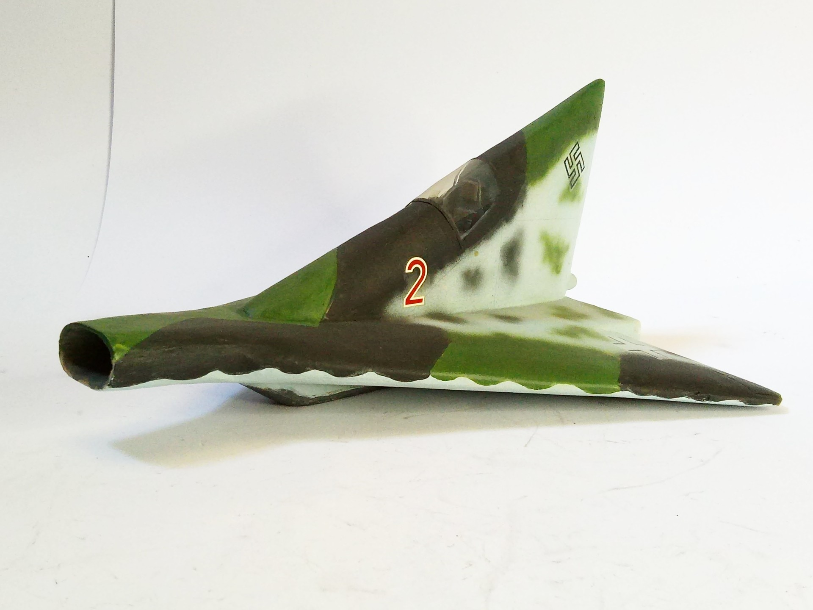
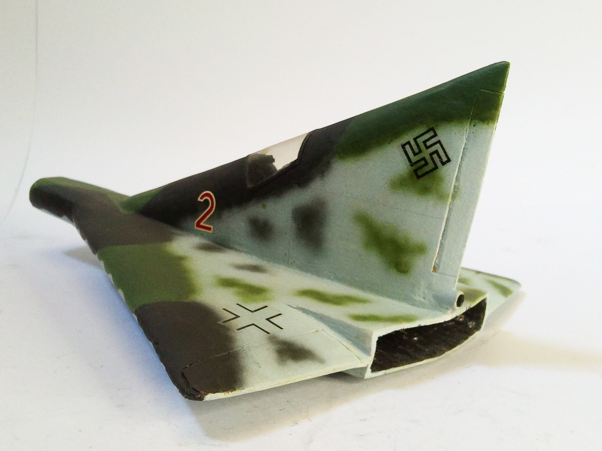

Aerei · scale model archive
Lippisch P13a
Lippisch P13a — Kit: scratchbuilt, Scale: 1/32. Very futuristic aerodynamic concept for a supersonic fighter, model scratchbuilt in balsa, at least for…

Photo gallery

English description
Very futuristic aerodynamic concept for a supersonic fighter, model scratchbuilt in balsa, at least for this scale no plastic model available yet
#1/32 #scratchbuilt
Descrizione italiana
Very futuristic aerodynamic concetto per una supersonic figther, modello autocostruito in balsa, at least per questo scala no plastic modello available yet.